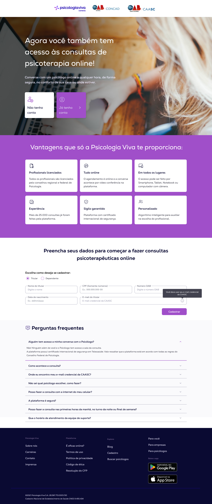

Vantagem 01
landing page
Landing page de parceria: levando a Psicologia Viva para novos públicos com o Hero.
Como desenhei, do conceito ao handoff, uma landing page de onboarding para uma parceria institucional (CAASC), aplicando na prática o Design System Hero que eu mesmo havia estruturado.
Contexto — o problema
A Psicologia Viva fechou uma parceria institucional com a CAASC (Caixa de Assistência dos Advogados de Santa Catarina), oferecendo acesso a consultas de psicoterapia online para os associados. Era necessário uma landing page de onboarding específica para esse público, que comunicasse claramente o benefício, resolvesse objeções comuns (segurança, sigilo, validade profissional) e conduzisse o associado até o cadastro — usando a credencial da própria CAASC como validação.
Desenhei essa página, do conceito ao handoff, aplicando os tokens de marca e os componentes que eu havia estruturado no Hero Design System para suportar múltiplas marcas dentro do mesmo ecossistema (Conexa e Psicologia Viva).
Solução
Estruturei a página em blocos que respondem, em ordem, às perguntas que um associado teria antes de se cadastrar:
Proposta de valor direta
Título e chamada visual mostrando o benefício central — acesso à psicoterapia online, a qualquer hora, com segurança.
Vantagens exclusivas
Seis pontos construindo confiança antes de pedir qualquer dado pessoal:
Vantagem 02
Atendimento 100% online
Vantagem 03
Acesso multiplataforma
Vantagem 04
+25.000 consultas realizadas
Vantagem 05
Sigilo com certificação internacional
Vantagem 06
Algoritmo de recomendação de profissional
Formulário de cadastro segmentado
Opção de titular ou dependente, com validação pelo e-mail credencial da CAASC — a integração que torna a parceria institucional funcional.
FAQ extenso
Oito perguntas antecipando as objeções mais prováveis (segurança da sala de consulta, conformidade com o CFP, uso pelo celular, horários de atendimento), reduzindo a fricção de quem ainda está decidindo se cadastra.
Toda a interface — cores, tipografia, componentes de formulário, cards e footer — usa diretamente os tokens do tema Psicologia Viva dentro do Hero, validando na prática que a arquitetura multi-marca do Design System funcionava para um caso real de negócio, não só em teoria.

Resultados
A página foi ao ar como parte da parceria com a CAASC. Não tenho acesso a métricas de conversão ou volume de cadastros dessa entrega específica, mas o projeto validou dois pontos importantes:
Reuso real do Design System
A página foi montada quase inteiramente com componentes já existentes do Hero, sem necessidade de criar elementos novos — prova prática de que a arquitetura de tokens multi-marca (discutida no case do Hero) funcionava para entregas de negócio sob prazo apertado.
Antecipação de objeções via FAQ
Ao invés de um FAQ genérico, mapeei perguntas específicas do contexto jurídico/institucional (validade da credencial CAASC, conformidade com o CFP), reduzindo a carga de suporte esperada no lançamento.
Aprendizados
- Um Design System bem construído se prova não na documentação, mas na velocidade de montar uma entrega real com ele.
- Landing pages de parceria institucional precisam responder objeções específicas do público antes de pedir cadastro, não depois.
- Nem toda entrega tem métrica de conversão disponível — mas isso não invalida o valor de mostrar o raciocínio e a execução por trás dela.